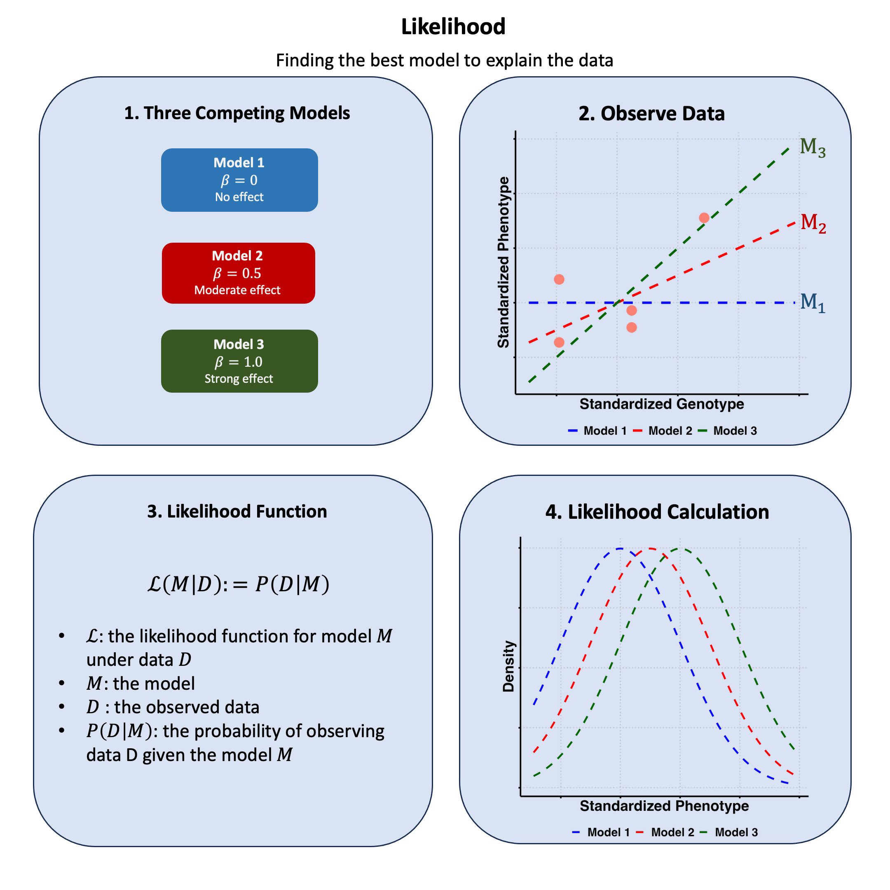

Likelihood#
Likelihood is the plausibility of observing your data given a specific model or parameter value.
Graphical Summary#

Key Formula#
The likelihood for a model \(\text{M}\) based on data \(\text{D}\) is:
Where:
\(\text{M}\) is the likelihood function for model \(\text{M}\) under data \(\text{D}\)
\(\text{M}\) represents the model
\(\text{D}\) represents the observed data
\(P(\text{D}|\text{M})\) is the probability of observing data \(\text{D}\) given the model \(\text{M}\)
Technical Details#
Single Sample#
For a single observation \(\text{D}_1\):
Multiple Samples (Independence Assumption)#
For multiple independent observations \(\text{D} = \{\text{D}_1,\dots,\text{D}_N \}\):
Under the assumption of independence, the joint probability of multiple independent samples is the product of their individual probabilities.
Log-Likelihood#
We often work with log-likelihood for computational stability:
The \(\log\) transformation converts products to sums, making calculations easier and preventing numerical underflow with very small probabilities.
In this series of lectures, unless otherwise specified, we use log base e.
Example#
Say we have genotype data across 5 people and we also have their measurements of height. Now suppose I have three different theories about how genetics affects height:
Model 1: no genetic effect (\(\beta=0\))
Model 2: moderate genetic effect (\(\beta=0.5\))
Model 3: large genetic effect (\(\beta=1.0\))
How do I know from the data which theory is most plausible?
This is where likelihood comes in - it helps us evaluate how well each theory explains our observed data. We’ll generate some example data where we know the true effect size (\(\beta = 0.4\)), then calculate the likelihood under each of our three theories to see which one the data supports most strongly.
Let’s first generate the genotype data and trait values for 5 individuals.
# Clear the environment
rm(list = ls())
set.seed(19) # For reproducibility
# Generate genotype data for 5 individuals at 1 variant
N <- 5
genotypes <- c("CC", "CT", "TT", "CT", "CC") # Individual genotypes
names(genotypes) <- paste("Individual", 1:N)
# Define alternative allele
alt_allele <- "T"
# Convert to additive genotype coding (count of alternative alleles)
Xraw_additive <- numeric(N)
for (i in 1:N) {
alleles <- strsplit(genotypes[i], "")[[1]]
Xraw_additive[i] <- sum(alleles == alt_allele)
}
names(Xraw_additive) <- names(genotypes)
# Standardize genotypes
X <- scale(Xraw_additive, center = TRUE, scale = TRUE)[,1]
# Set true beta and generate phenotype data
true_beta <- 0.4
true_sd <- 1.0
# Generate phenotype with true effect
Y_true <- X * true_beta + rnorm(N, 0, true_sd)
Now, let’s create two functions to compute the likelihood and log-likelihood under different models (in this case, different \(\beta\)s) for the effect of a genetic variant on height:
# Likelihood function for normal distribution
likelihood <- function(beta, sd, X, Y) {
# Calculate expected values under the model
mu <- X * beta
# Calculate likelihood (product of normal densities)
prod(dnorm(Y, mean = mu, sd = sd, log = FALSE))
}
# Log-likelihood function (more numerically stable)
log_likelihood <- function(beta, sd, X, Y) {
# Calculate expected values under the model
mu <- X * beta
# Calculate log-likelihood (sum of log normal densities)
sum(dnorm(Y, mean = mu, sd = sd, log = TRUE))
}
Now, let’s apply this function to our three models:
# Test three different models with different beta values
beta_values <- c(0, 0.5, 1.0) # Three different effect sizes to test
model_names <- paste0("Model ", 1:3, "(beta = ", beta_values, ")")
# Calculate likelihoods and log-likelihoods
results <- data.frame(
Model = model_names,
Beta = beta_values,
Likelihood = numeric(3),
Log_Likelihood = numeric(3)
)
for (i in 1:3) {
results$Likelihood[i] <- likelihood(beta = beta_values[i], sd = true_sd, X = X, Y = Y_true)
results$Log_Likelihood[i] <- log_likelihood(beta = beta_values[i], sd = true_sd, X = X, Y = Y_true)
}
The results are:
results
| Model | Beta | Likelihood | Log_Likelihood |
|---|---|---|---|
| <chr> | <dbl> | <dbl> | <dbl> |
| Model 1(beta = 0) | 0.0 | 0.0019210299 | -6.254894 |
| Model 2(beta = 0.5) | 0.5 | 0.0021961524 | -6.121048 |
| Model 3(beta = 1) | 1.0 | 0.0009236263 | -6.987203 |
Let’s visualize the likelihood and log-likelihood for the three models:
# Create barplot of likelihoods
barplot(results$Likelihood,
names.arg = paste("beta =", results$Beta),
main = "Likelihood Values for Different Beta Parameters",
xlab = "Model (Beta Value)",
ylab = "Likelihood",
col = c("lightblue", "lightcoral", "lightgreen"),
border = "black",
ylim = c(0, max(results$Likelihood) * 1.1))
# Add values on top of bars
text(x = seq(0.7, by = 1.2, length.out = 3),
y = results$Likelihood + max(results$Likelihood) * 0.02,
labels = round(results$Likelihood, 6),
cex = 0.8)

# Create barplot of log-likelihoods
barplot(results$Log_Likelihood,
names.arg = paste("beta =", results$Beta),
main = "Log-Likelihood Values for Different Beta Parameters",
xlab = "Model (Beta Value)",
ylab = "Log-Likelihood",
col = c("lightblue", "lightcoral", "lightgreen"),
border = "black",
ylim = c(min(results$Log_Likelihood) * 1.1, 0))
# Add values on top of bars
text(x = seq(0.7, by = 1.2, length.out = 3),
y = results$Log_Likelihood - abs(min(results$Log_Likelihood)) * 0.02,
labels = round(results$Log_Likelihood, 4),
cex = 0.8)

Supplementary#
Graphical Summary#
library(ggplot2)
df_scatter <- data.frame(
Genotype = X,
Phenotype = Y_true
)
# Create plot
p1 <- ggplot(df_scatter, aes(x = Genotype, y = Phenotype)) +
geom_point(color = "salmon", size = 6) +
labs(
x = "Standardized Genotype",
y = "Standardized Phenotype"
) +
theme_minimal() +
theme(
# Font styling
text = element_text(size = 18, face = "bold"),
axis.title = element_text(size = 20, face = "bold"),
# Hide axis tick labels
axis.text.x = element_blank(),
axis.text.y = element_blank(),
# Customize grid and axes
panel.grid.major = element_line(color = "gray", linetype = "dotted"),
panel.grid.minor = element_blank(),
axis.line = element_line(linewidth = 1),
axis.ticks = element_line(linewidth = 1),
# Transparent background
panel.background = element_rect(fill = "transparent", color = NA),
plot.background = element_rect(fill = "transparent", color = NA)
)
# Create sequence of x values for smooth lines
x_vals <- seq(min(X) - 0.5, max(X) + 1.5, length.out = 100)
# Create updated data frame for lines
lines_df <- data.frame(
Genotype = rep(x_vals, 3),
Phenotype = c(
0 * x_vals,
0.5 * x_vals,
1 * x_vals
),
Model = factor(rep(c("beta = 0", "beta = 0.5", "beta = 1"), each = length(x_vals)),
levels = c("beta = 0", "beta = 0.5", "beta = 1"))
)
# Add dashed lines with plain labels
p2 <- p1 +
geom_line(data = lines_df, aes(x = Genotype, y = Phenotype, color = Model, linetype = Model), linewidth = 1.5) +
scale_color_manual(values = c("beta = 0" = "blue", "beta = 0.5" = "red", "beta = 1" = "darkgreen")) +
scale_linetype_manual(values = c("beta = 0" = "dashed", "beta = 0.5" = "dashed", "beta = 1" = "dashed")) +
theme(
legend.title = element_blank(),
legend.position = "bottom",
legend.text = element_text(size = 16, face = "bold")
)
# Show and save plot
print(p2)
ggsave("./cartoons/likelihood_data_fitted.png", plot = p2,
width = 6, height = 6, dpi = 300, bg = "transparent")

# Create a data frame for likelihood curves
baseline <- 0 # baseline for standardized data
genotype <- 1 # example genotype value for visualization
df_likelihood <- data.frame(
Phenotype = x_vals,
`beta = 0` = dnorm(x_vals, mean = baseline, sd = true_sd),
`beta = 0.5` = dnorm(x_vals, mean = baseline + 0.5 * genotype, sd = true_sd),
`beta = 1` = dnorm(x_vals, mean = baseline + 1 * genotype, sd = true_sd)
)
# Reshape to long format
df_long_lik <- reshape2::melt(df_likelihood, id.vars = "Phenotype",
variable.name = "Model", value.name = "Density")
levels(df_long_lik$Model) <- c("beta = 0", "beta = 0.5", "beta = 1")
# Plot the likelihood curves
p3 <- ggplot(df_long_lik, aes(x = Phenotype, y = Density, color = Model, linetype = Model)) +
geom_line(linewidth = 1.2) +
scale_color_manual(values = c("beta = 0" = "blue", "beta = 0.5" = "red", "beta = 1" = "darkgreen")) +
scale_linetype_manual(values = c("beta = 0" = "dashed", "beta = 0.5" = "dashed", "beta = 1" = "dashed")) +
labs(
x = "Standardized Phenotype",
y = "Density"
) +
theme_minimal() +
theme(
text = element_text(size = 18, face = "bold"),
axis.title = element_text(size = 20, face = "bold"),
axis.text.x = element_blank(),
axis.text.y = element_blank(),
panel.grid.major = element_line(color = "gray", linetype = "dotted"),
panel.grid.minor = element_blank(),
axis.line = element_line(linewidth = 1),
axis.ticks = element_line(linewidth = 1),
panel.background = element_rect(fill = "transparent", color = NA),
plot.background = element_rect(fill = "transparent", color = NA),
legend.title = element_blank(),
legend.position = "bottom",
legend.text = element_text(size = 16, face = "bold")
)
# Show and save the plot
print(p3)
ggsave("./cartoons/likelihood_density.png", plot = p3,
width = 6, height = 6, dpi = 300, bg = "transparent")

# Create a data frame for likelihood curves
baseline <- 0 # baseline for standardized data
genotype <- 1 # example genotype value for visualization
df_likelihood <- data.frame(
Phenotype = x_vals,
`beta = 0` = dnorm(x_vals, mean = baseline, sd = true_sd),
`beta = 0.5` = dnorm(x_vals, mean = baseline + 0.5 * genotype, sd = true_sd),
`beta = 1` = dnorm(x_vals, mean = baseline + 1 * genotype, sd = true_sd)
)
# Reshape to long format
df_long_lik <- reshape2::melt(df_likelihood, id.vars = "Phenotype",
variable.name = "Model", value.name = "Density")
levels(df_long_lik$Model) <- c("beta = 0", "beta = 0.5", "beta = 1")
# Plot the likelihood curves
p3 <- ggplot(df_long_lik, aes(x = Phenotype, y = Density, color = Model, linetype = Model)) +
geom_line(linewidth = 1.2) +
scale_color_manual(values = c("beta = 0" = "blue", "beta = 0.5" = "red", "beta = 1" = "darkgreen")) +
scale_linetype_manual(values = c("beta = 0" = "dashed", "beta = 0.5" = "dashed", "beta = 1" = "dashed")) +
labs(
x = "Standardized Phenotype",
y = "Density"
) +
theme_minimal() +
theme(
text = element_text(size = 18, face = "bold"),
axis.title = element_text(size = 20, face = "bold"),
axis.text.x = element_blank(),
axis.text.y = element_blank(),
panel.grid.major = element_line(color = "gray", linetype = "dotted"),
panel.grid.minor = element_blank(),
axis.line = element_line(linewidth = 1),
axis.ticks = element_line(linewidth = 1),
panel.background = element_rect(fill = "transparent", color = NA),
plot.background = element_rect(fill = "transparent", color = NA),
legend.title = element_blank(),
legend.position = "bottom",
legend.text = element_text(size = 16, face = "bold")
)
# Show and save the plot
print(p3)
ggsave("./cartoons/likelihood_density.png", plot = p3,
width = 6, height = 6, dpi = 300, bg = "transparent")